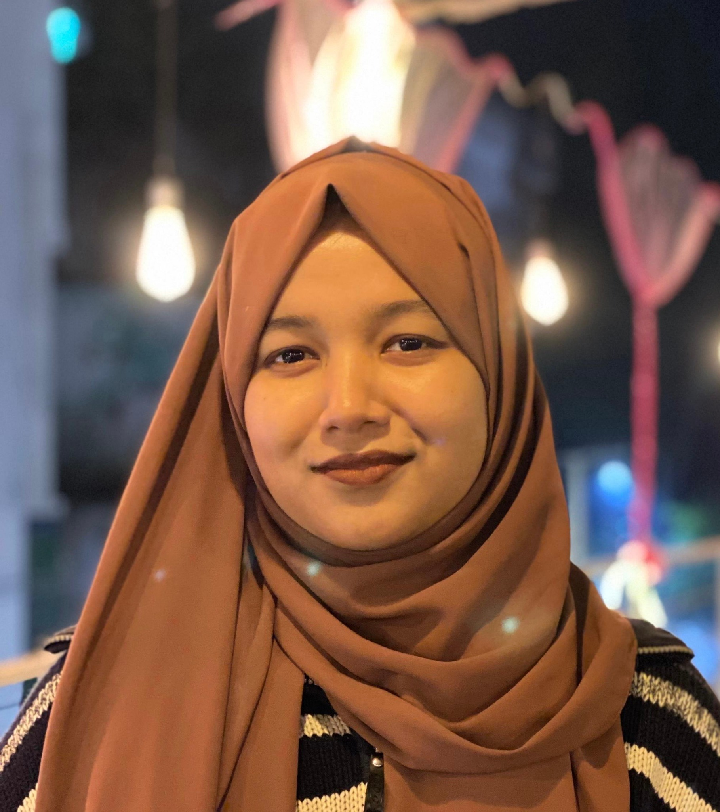
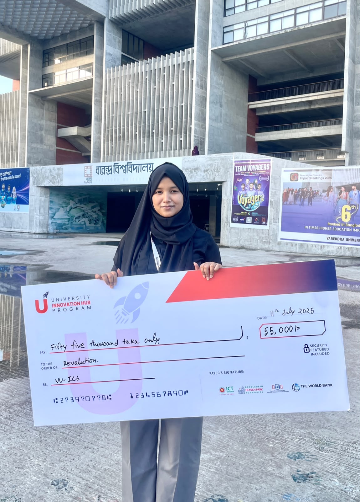
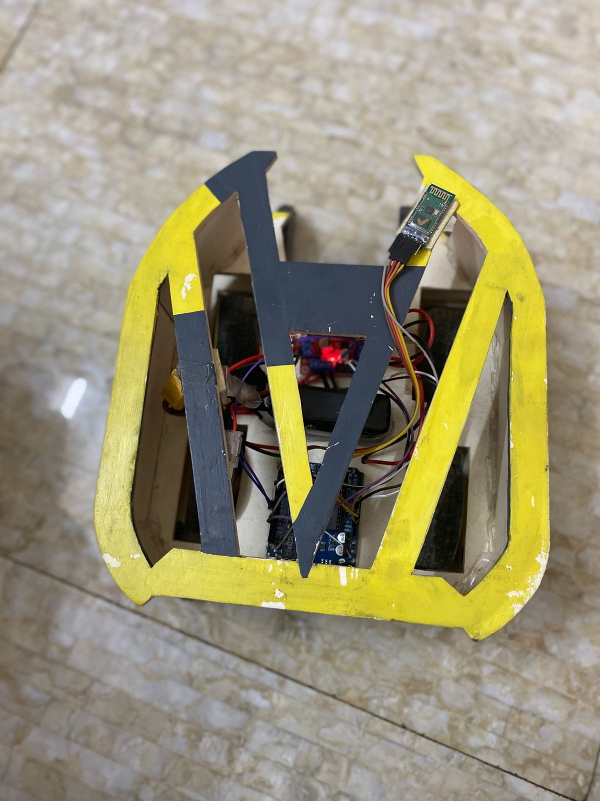
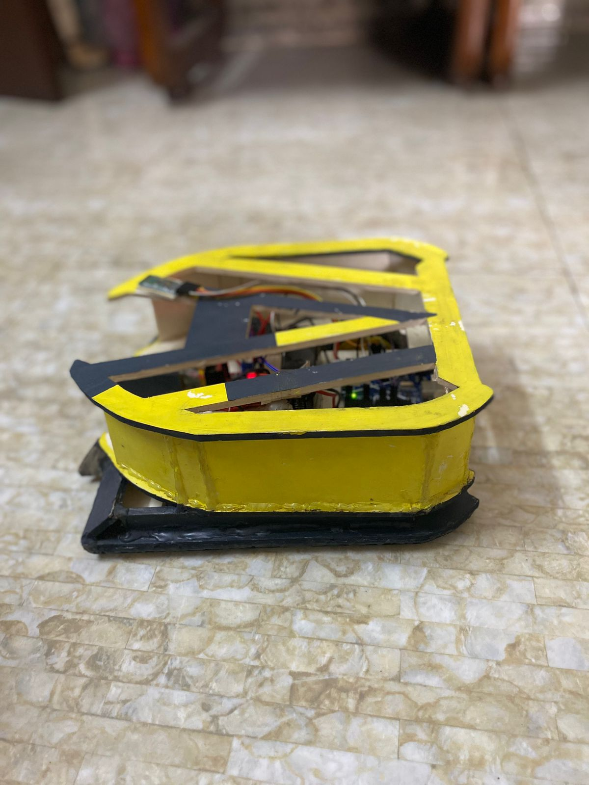
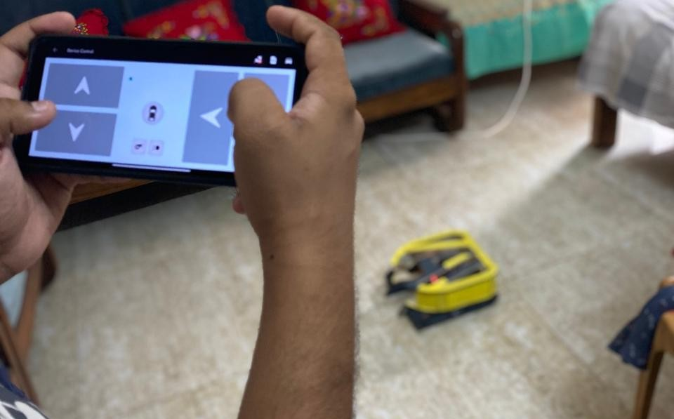

Portfolio
Rushdania Bushra
CSE Student · Research Enthusiast · Innovation & Robotics Team Member
I am a Computer Science and Engineering student with interests in research, innovation, robotics, Python, and machine learning. I enjoy collaborative technical work, academic research, and building practical solutions for real-world problems.

About Me
Academic Profile
Who I Am
I am Rushdania Bushra, a Computer Science and Engineering student who enjoys learning through research, competitions, technical teamwork, and project-based problem solving.
What I Focus On
My main areas of interest include signal processing, innovation-driven projects, robotics, website development, Python, and machine learning.
What I Value
I value curiosity, teamwork, practical implementation, and clear technical presentation. I enjoy contributing to meaningful projects and continuously improving my skills.
Research
Research & Publications
My research work comes first in this portfolio, followed by competition achievements and project experience.
UCICS Paper
Functional Connectivity Alterations in Major Depressive Disorder: Insights from EEG-Based Beta Band Connectivity Patterns
This work explored EEG-based beta band connectivity patterns to gain insights into functional connectivity alterations in Major Depressive Disorder.
Ongoing Research
Research Work Under Faculty Supervision
I am also involved in an ongoing research paper under the supervision of my teacher. The work is still in progress, so detailed public information will be added after its status is finalized.
Achievements & Projects
Competitions, Innovation, and Robotics


Champion
Varendra University Innovation Hub Competition
Agventure is a closed and controlled-area farming concept designed as an off-season farming alternative for farming enthusiasts. The project aims to support productive cultivation in a more controlled environment.
My Contribution: Idea development, data analysis, programming, website development, and technical presentation.




Robotics Competition
VU Tech Carnival 2024 - Robo Soccer
I participated in the Robo Soccer competition as part of a collaborative robotics team. Our team designed, assembled, tested, and operated a soccer bot for live competition.
My Contribution: Robot frame construction, mechanical assembly, controller operation, performance testing, troubleshooting, and teamwork.
We reached the quarterfinal stage and plan to make a stronger comeback in the 2026 competition.
Skills
Skills & Current Learning
Technical Skills
HTML
CSS
JavaScript
Python
GitHub
Data Analysis
Website Development
Technical Presentation
Problem Solving
Teamwork
Currently Learning
I am currently learning Python for AI and development, along with the fundamentals of machine learning. My focus is on building a stronger foundation step by step through practice and continuous study.
Machine Learning Fundamentals
Python for AI
Research-Oriented Learning
Credentials
Certificates
UCICS Certificate of Appreciation
Certificate recognizing the conference paper contribution and presentation at UCICS.
Open Certificate →Innovation Cohort Completion Certificate
Certificate of completion under the University Innovation Hub Program, VU Innovation Cohort 6.
Open Certificate →Robo Soccer Participation Certificate
Certificate awarded for participating in the Robo Soccer competition at VU Tech Carnival '24.
Open Certificate →Get in Touch
Let’s Connect
You can explore my work and academic activities through my GitHub profile.